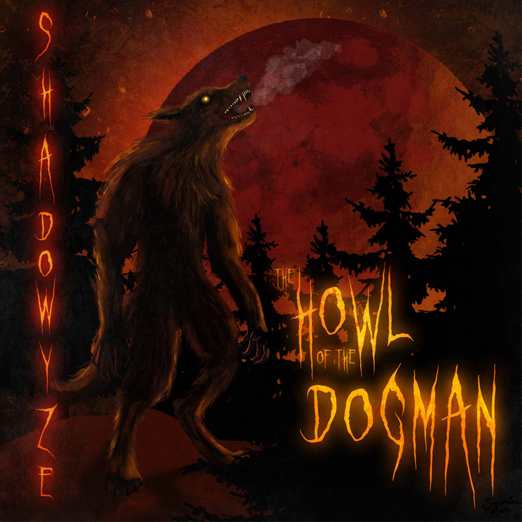

Maya Enfinger, The Howl of the Dogman, 2026, Digital Art
This artwork was made for the song The Howl of the Dogman by Shadowyze. I made this in Procreate and went for a creepy, dark vibe to match the song and to capture the feeling of encountering a dogman in the woods. This artwork was featured in FATE Magazine.